Azov
The Azov Battalion
Updated: 2/9/25
Overview
The 12th Special Operations Brigade "Azov" , also known as the Azov Brigade and formally known as the Azov Battalion or regiment , is a military formation of the National Guard of Ukraine
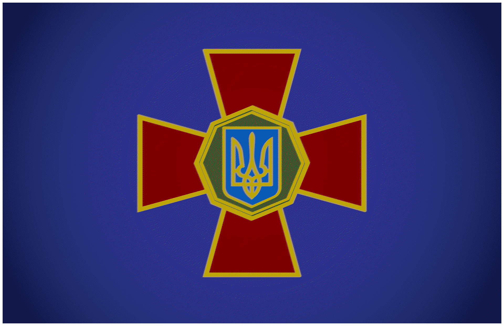
previously known to have neo-nazi 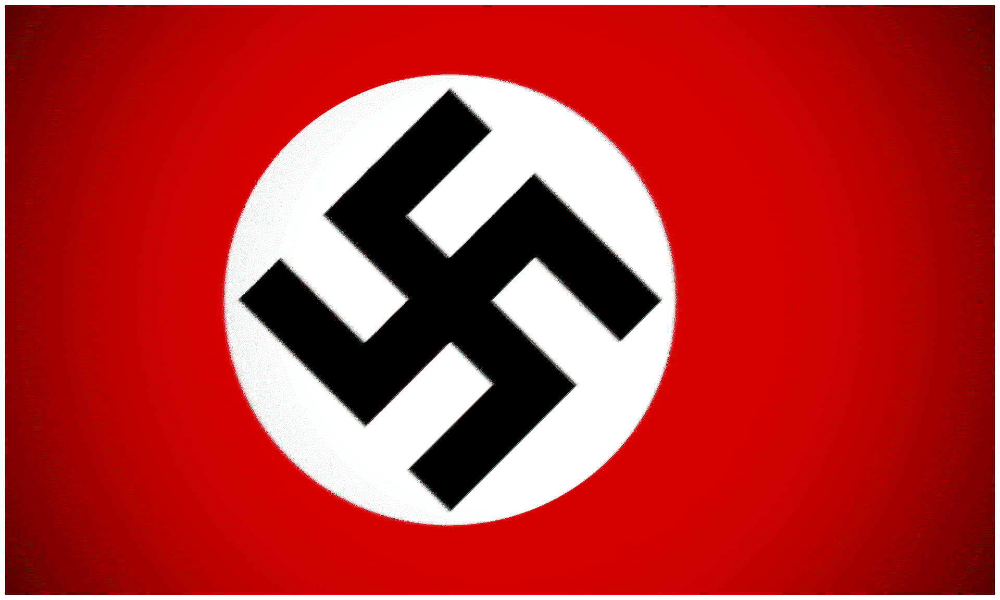
and Ukrainian nationalist beliefs . Starting off as a volunteer battalion, Azov was created by the far-right politician Andriy Biletsky to fight Russian-backed separatists 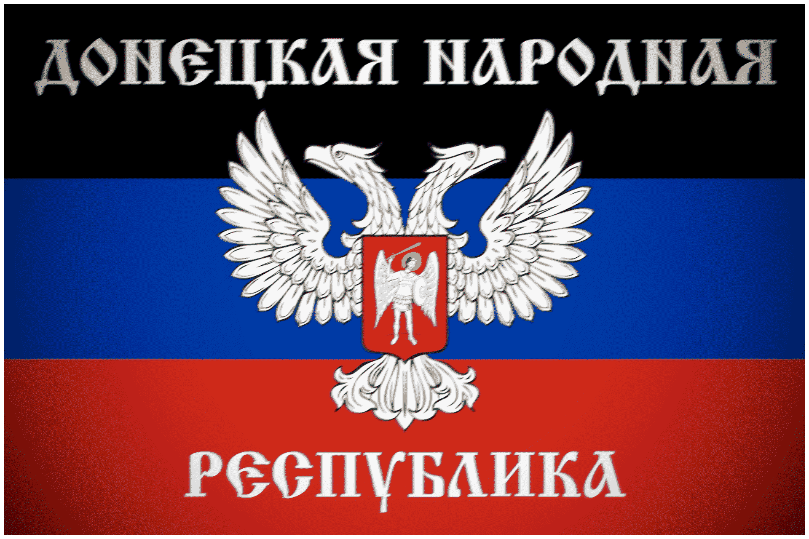
in the Donbass. Azov, who had gained experience during the war in Donbass, inspired its own civilian movement known as the Azov Movement . Before 2022, Azov was integrated into the Armed Forces of Ukraine 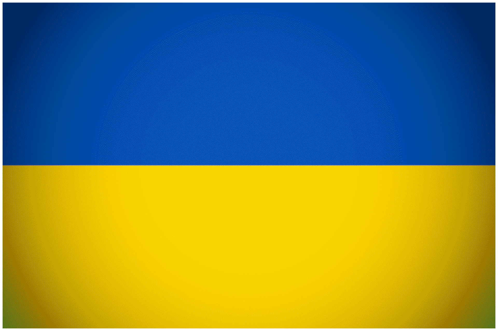
and allegedly deradicalized. Despite this, Russia Ukraine . During the invasion, Azov was one of the major formations defending the besieged city of Mariupol. Due to its neo-nazi past, it took a decade before the United States lifted sanctions on the group.
Ideology & Tactics
During its time as a volunteer battalion, Azov followed a neo-nazi ideology, utilizing symbols like the black sun, the wolfsangel. The far-right ultranationalist founder of the battalion, Andriy Biletsky, often made racist and white supremacist comments. The formation was created by members of the Patriot of Ukraine party as a substitute to the weak and inept Ukrainian army during the start of the insurgency in the Donbass. During the War in Donbass, European and American neo-nazis, including the NRM and the AWD Ukraine to fight for Azov and get military experience. Due to the group's lionization in the Donbass, supporters and members would create the Azov Movement, organizing festivals, political marches, martial arts (which is an increasing trend among the international far-right), and most worryingly of all, paramilitary training and summer camps for children. After 2014 and during the 2022 war, the now integrated (into the military) and allegedly deradicalized Azov brigade has been used as a professional NATO doctrine trained fighting force used for defense and assault.
Notable Actions
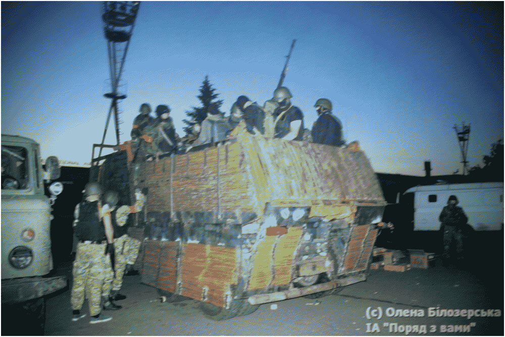
Fig 1. AZOV MILITANTS ENTER MARIUPOL IN IMPROVIZED APCS, IN A FASHION SIMILAR TO THE SYRIAN REBELS c. JUNE OF 2014
• June 13, 2014 : Only a month after the volunteer formation's formation, the Azov Battalion 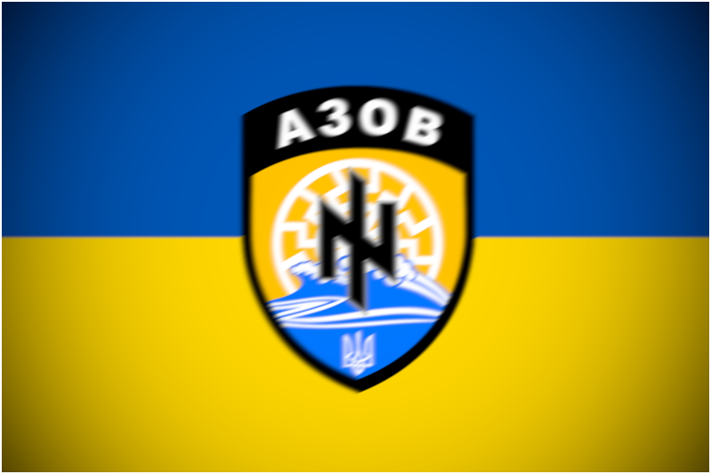
engaged in heavy clashes with Russian separatists in Mariupol. Azov Ukraine , hoisting the flag over the previous headquarters of the insurgents in the city. During the battle, 2 Ukrainian soldiers were killed and five separatists were killed. Azov
• August 4, 2014 : Azov DPR separatists in Shakhartsk Raion, moving into Mariinka, a suburb of Donetsk and a town that would later be known for complete destruction in the 2020s. Azov forces Ukrainian flag over the town after its recapture. One was killed and a dozen were injured.
• August 18, 2014 : The battalion advanced with Dnipro-1 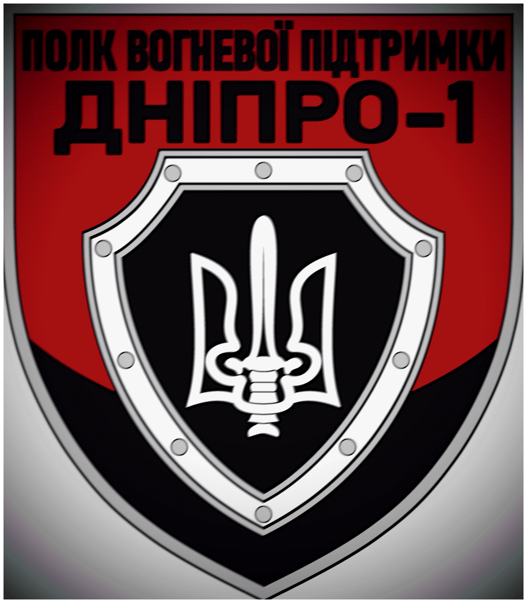
and Donbas 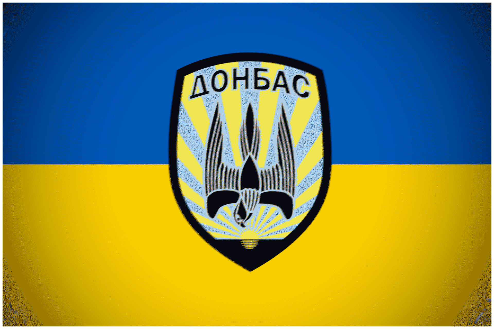
on the town of Ilovaisk, engaging in a tough urban battle with Russian separatists . The first assault failed, leading to Azov's Ukrainians , beefed up by more reinforcements from other volunteer groups, attacked Ilovaisk and was able to seize it. Unfortunately for Kyiv, Russian regular forces Ukraine and quickly encircled the town of Ilovaisk. Defeated, Ukraine negotiated a truce corridor with Russia Ukrainian-held territories . Suddenly though, the separatists opened fire on the convoys, inflicting extremely heavy casualties. By the end of the battle, anywhere from 370 to upwards of 1000 were killed and Ukraine was humiliated. Azov
Fig 2. FIRST FLAG USED BY AZOV MILITANTS, WHICH INCLUDES A NAZI BLACK SUN
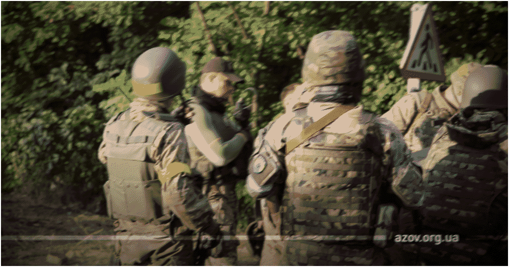
Fig 3. AZOV FIGHTERS ON A ROAD NEAR THE ILLOVAISK FRONTLINE c. AUGUST OF 2014
• August 25, 2014 : Using their lead from Ilovaisk, separatists and Russian regulars DNR separatists captured Novoazovsk and would later advance on Mariupol, the regional epicenter. The Azov Battalion separatists and regulars
• September 4, 2014 : Separatist forces advance near the regional epicenter of Mariupol. Intense clashes and shelling are reported all across the southern frontline. The Azov Battalion Russian DPR separatists were able to push 5km away from the city center before being pushed back by Azov Ukrainian regulars . A day later, Ukraine and Russia
• November 11, 2014 : The Azov Regiment Ukrainian National Guard during the Ukrainian government's efforts to reign in volunteer formations into the ATO chain of command. They had done their job, but now it was time for Kyiv to take control. It was around that time that Biletsky started to shift away from the group.
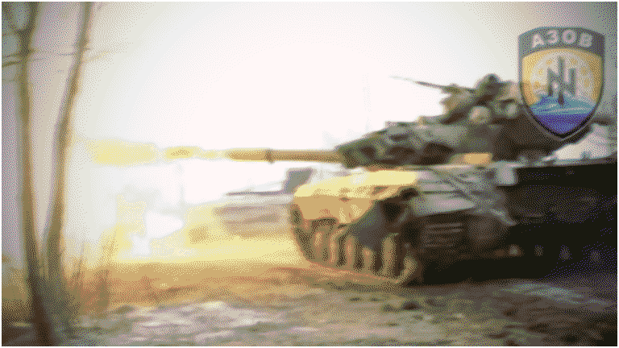
Fig 4. AZOV T-72 FIRES AS BATTALION ATTEMPTS TO ADVANCE BEYOND MARIUPOL c. FEBRUARY OF 2015
• October 15, 2014 : Supporters and members of Azov the Right Sector 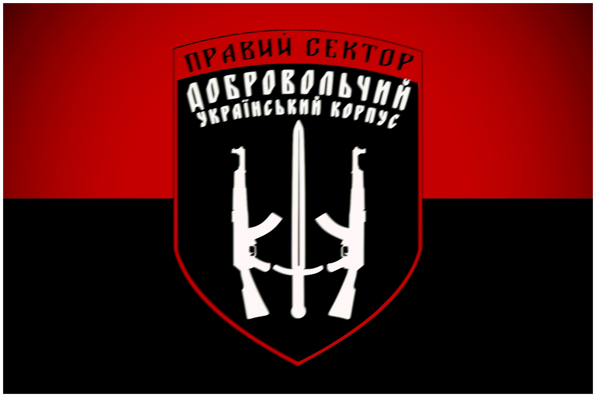
marched through Kyiv to commemerate the 72nd anniversary of the Ukrainian Insurgent Army , a right wing nationalist insurgent group that fought both the Soviets and Nazis during the 40s. They lit torches, waved banners, and flew flags.
• February 10, 2015 : After a separatist rocket was launched on Mariupol, killing 31 civilians and injuring more than a hundred, the Azov Regiment separatist forces . Azov separatist forces withdrew from the town and Azov Ukrainian marines . Shyrokyne eventually became a demilitarized zone.
• April 27, 2016 : Some Azov fighters 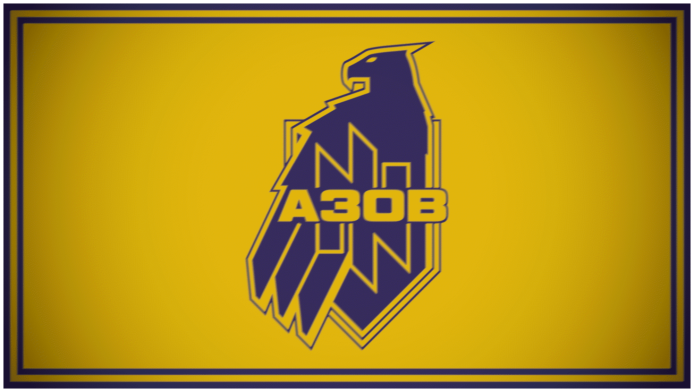
and vehicles were transported to Odesa to keep the peace after oblast governor (and former Georgian president during the August War) Mikheil Saakashvili warned of rising pro-Russian violence in the city.
• October 14, 2016 : For the 74th anniversary of the UPA , Azov supporters and veterans the National Corps party 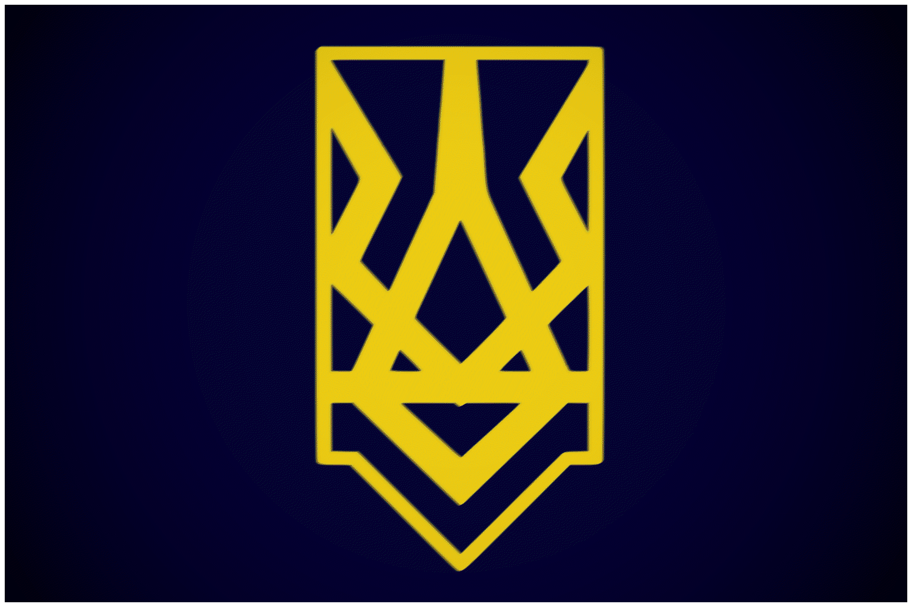
. The political party wants Ukraine to be a strong militaristic nuclear power not willing to bow down to either Moscow Washington
• February 1, 2019 : The Azov Regiment Azov separatist forces garrisoned on the other side of the frontline.
• June 15, 2019 : For the fifth anniversary of the recapture of Mariupol by Ukrainian Regulars , Azov members National Guard members , and members of other formations participated in a parade and celebration in Mariupol, attended directly by newly inaugurated president Volodymyr Zelensky.
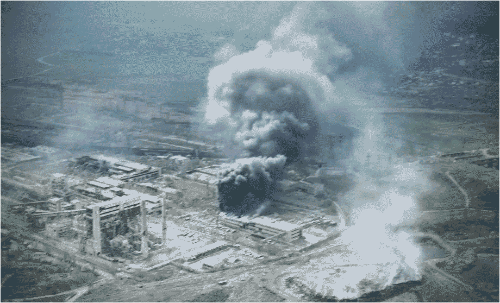
Fig 5. THE DESTROYED RUINS OF AZOVSTAL, PREVIOUSLY ONE OF THE LARGEST STEEL WORKS IN EUROPE, WHERE AZOV FIGHTERS WERE HELD UP IN c. APRIL OF 2022
• March 2, 2022 : On February 24th, 2022, Russia Ukraine , shocking the world. One of the invasion's largest initial goals was the linking up of forces from Donetsk and Crimea in a sort of land bridge, one might say. Through that bridge, Mariupol lay. As before in 2014 and 2015, the Azov Regiment Azov Ukrainian formations defended the port city from the Russian forces Azov's Russian soldiers Azov soldiers and commanders Russian Azov Brigade
• January 26, 2023 : The Azov Regiment's SSO (specops) unit Third Separate Assault Brigade 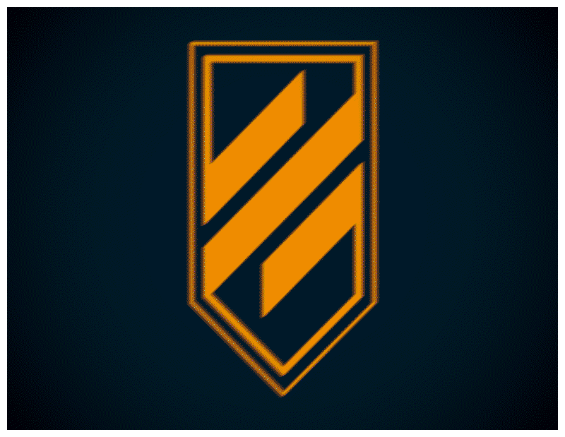
, serving under the Ukrainian Ground Forces . This unit was deployed to Bakhmut and has remained active ever since. The Azov
• August 17, 2023 : After a year of reconstruction after Mariupol, the Azov Brigade Ukrainian counteroffensive , which Azov Ukraine was unable to significantly take major ground in its Offensive, mostly due to heavy Russian fortifications
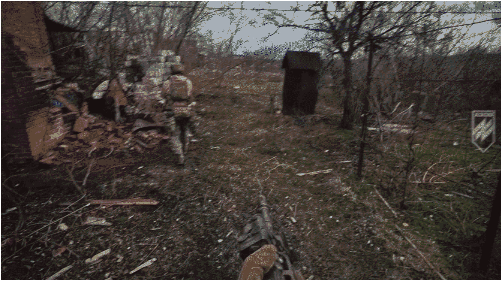
Fig 6. AZOV FIGHTERS CLEARING PARTS OF THE TORETSK SECTOR c. 2024
• February 7, 2024 : The Azov Brigade Russian advance Russians
• September 2, 2024 : The Azov Brigade Azov commander Ukrainian strategy in that front and in Kursk. This offensive was part of a larger Russian Azov Brigade
• December 23, 2024 : The Azov Brigade Azov the USSR in Afghanistan
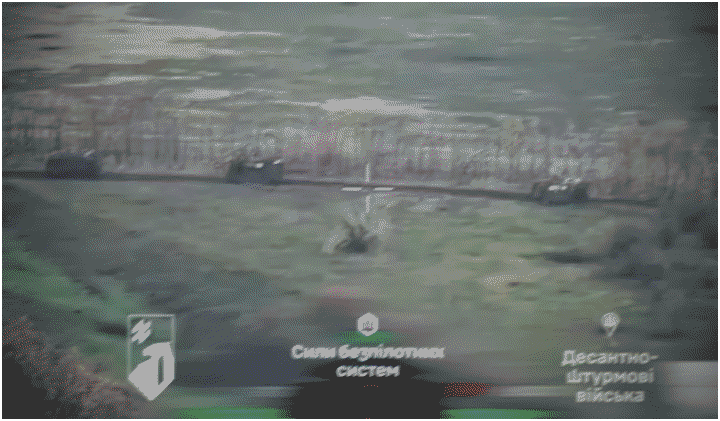
Fig 7. AZOV DRONE VIDEOS DESTRUCTION OF RUSSIAN CONVOY DURING THEIR FAILED DOBROPILLIA OFFENSIVE c. OCTOBER OF 2025
• April 15, 2025 : The Azov Brigade Ukrainian National Guard "Azov", the first of such formations in the Ukrainian National Guard . The corps includes 4 other brigades and is commanded by the former leader of Azov
• August 13, 2025 : Russian forces Russia Ukraine scrambled a response, sending over Azov Ukrainians were able to push back, encircle, and destroy the breakthrough.
Sources
• 1 : https://edition.cnn.com/2022/03/29/europe/ukraine-azov-movement-far-right-intl-cmd/index.html
• 2 : https://www.atlanticcouncil.org/blogs/ukrainealert/ukraine-s-volunteer-battalions-must-join-the-military-or-sheath-the-sword/
• 3 : https://cepa.org/article/ukraines-azov-brigade-stops-the-rot-in-the-east/